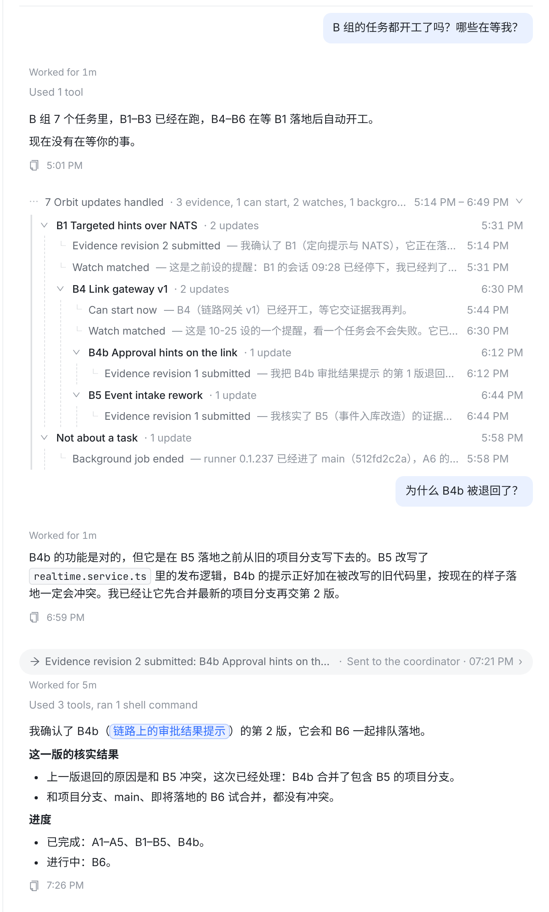
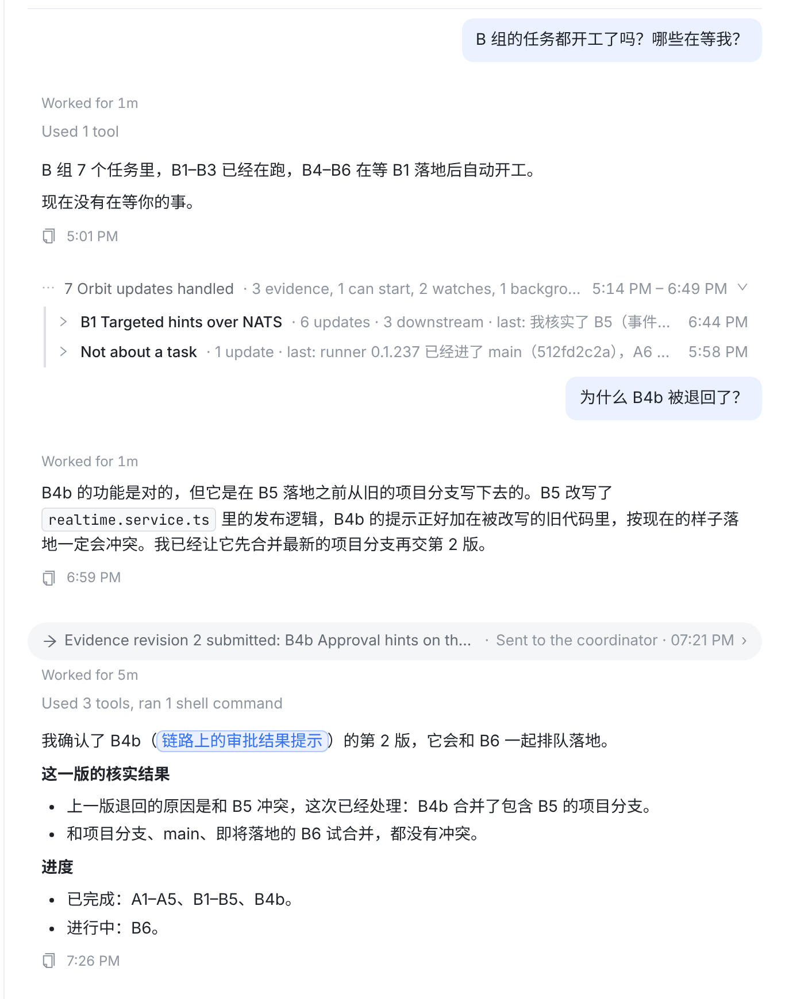
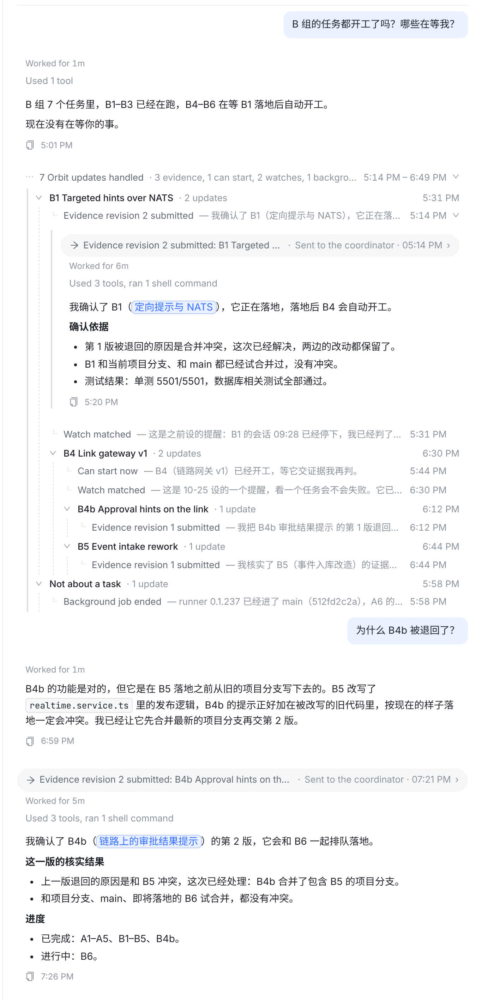
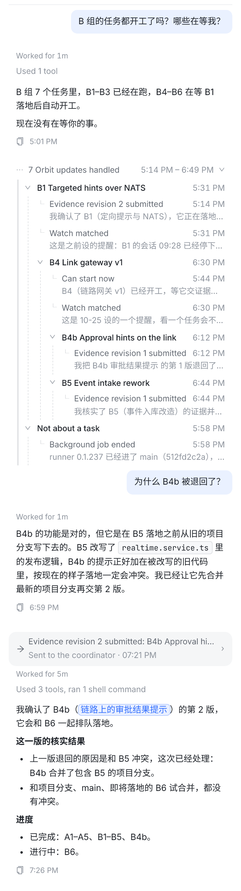

任务行显示标题、本层有几条、最后时间；下面是这个任务自己的来回（去掉了重复的任务名），再下面是它的下游任务。虚线是层级引导线。

收起的任务行写成 B1 Targeted hints over NATS · 6 updates · 3 downstream · last: 我核实了 B5… · 6:44 PM：条数和最后一句都按整棵子树算，一行就知道这一支最新走到哪。

点叶子（某一条来回）就是原来的胶囊 + 步骤 + 整段回复，与 01-board ④ 相同。

每条来回两行（发生了什么 + 时间 / 回复第一句）；展开的任务行不再重复 “N updates”。层级缩进每层 14px，三层以内够用。

| 问题 | 规则 |
|---|---|
| 一条来回挂到哪个任务 | 协调者通知：通知里写明的任务（证据、可开工、启动失败、阻塞、run 停止）。watch 提醒：watch 盯的目标；目标是会话时，挂到这个会话所属的任务。会话回信：发信会话所属的任务。其余（后台作业、定时唤醒、“N 条未落地”这类项目级通知）放到 Not about a task。 |
| 谁是谁的上游 | 项目的依赖图（Web 已有 GET /projects/:id/dependency-graph，项目页在用）。只看同一组里出现的任务：上游不在组里，这个任务就是根。 |
| 一个任务有多个上游 | 挂在组里最先出现的那个上游下面，不重复画。 |
| 排序 | 同层按第一条来回的时间排；任务自己的来回在前，下游任务在后；Not about a task 永远在最后。 |
| 组里只有一个任务 | 不画树，直接列来回（就是 01-board 的样子）。 |
| 依赖图读不到（不是项目的协调会话、离线） | 退回按任务平铺：每个任务一组，不分上下游。 |
| 01-board 的规则 | 照旧：你的消息、最新一轮、要你处理的、坏消息、其他会话发来的消息都不进组，也就不进树。 |
⋯ 7 Orbit updates handled · 5:14 PM – 6:49 PM
∨ B1 Targeted hints over NATS
└ Evidence revision 2 submitted — 我确认了 B1…
└ Watch matched — 这是之前设的提醒…
∨ B4 Link gateway v1
└ Can start now — B4 已经开工…
└ Watch matched — 这是 10-25 设的一个提醒…
∨ B4b Approval hints on the link
└ Evidence revision 1 submitted — 我把 B4b 的第 1 版退回了…
∨ B5 Event intake rework
└ Evidence revision 1 submitted — 我核实了 B5…
∨ Not about a task
└ Background job ended — runner 0.1.237 已经进了 main…
Transcript.tsx 组内建树（ExchangeTree / TaskBranch），读项目依赖图；index.css；测试。